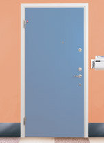
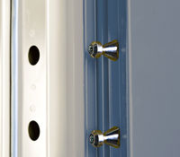
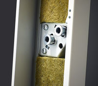
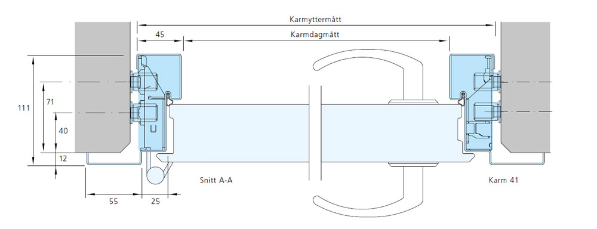

Daloc S44 (Y44) Säkerhetsdörr RC4
30 min, 60 min
Upp till Rw 43dB
SS-EN 1627 RC 4
S200, Sa
SS-EN 1522 FB 3
SS-EN 14351-1, SS-EN 16034

Daloc S44 är inbrottsskyddande i RC4 enligt SS-EN 1627 och är i första hand avsedd som entrédörr i lägenheter, där det krävs ett extra högt inbrottsskydd i kombination med ett estetiskt yttre.
Standard- och maxmått, utförande etc se produktfakta
S44 Produktblad
Drift-, Miljö- Och Underhållsdokumentation
Typgodkännande/Certifikat
Typgodkännande/Certifikat, Inbrott/Certifikat
Montageanvisning
CAD-Skiss S44 (Y44)
A-Klassade Branddörrar - Info SP SITAC
Y44 Prestandadeklaration
Användarguide Och Skötselinstruktion För Connect Flerpunktslås
CE-Certifikat: SC0479-16, EI(2)30 EW60
Montageanvisning Kompl Till Ytterdörrar
Typgodkännande/Certifikat, Skottskydd
Product Datasheet S44
Drift-, Miljö- Och Underhållsdokumentation
Typgodkännande/Certifikat
Typgodkännande/Certifikat, Inbrott/Certifikat
Montageanvisning
CAD-Skiss S44 (Y44)
A-Klassade Branddörrar - Info SP SITAC
Y44 Prestandadeklaration
Användarguide Och Skötselinstruktion För Connect Flerpunktslås
CE-Certifikat: SC0479-16, EI(2)30 EW60
Montageanvisning Kompl Till Ytterdörrar
Typgodkännande/Certifikat, Skottskydd
Product Datasheet S44
Dörren erbjuds även i andra modulstorlekar och karmyttermått. Se maxmått nedan.
Max väggöppningsmått för tex modul 9x21 är 920x2110 mm.
Maxmått innerdörr S44:
Enkeldörr brand/ljud 13x23/12x24
Enkeldörr brandgas 13x24
Enkeldörr inbrott 13x24
Laminatplåt: 1165x2393
Maxmått ytterdörr Y44:
Brand: EI230/EW60 13x26,5
Brandgas: 13x24
Laminatplåt: 1165x2393
Maxmått skottskydd S44/Y44 (endast enkeldörr):
Enkeldörr FB3: 13x21
Klassningar
Prestanda på dörrens egenskaper har provats av RISE (tidigare SP) och certifierats av RISE Certifiering samt SBSC. RISE och SBSC utför regelbundna tillverkningskontroller i Dalocs fabriker.
Brandklass: El 30, tillval A60
I BBR anges att det är generellt godtaget att använda A-klass som alternativ till EI-klass EI 60.
Ljudreduktion: Rw 38, tillval 43, 53* dB.
Ljudreduktion (Rw) har ersatt ljudklass (R'w). Vid projektering minskas uppmätt ljudreduktion dörr med 2-3dB för hänsyn till montage och utförande. Tidigare ljudklass R'w 35, 40, 50dB*.
* Enkeldörr i Rw 53dB (R'w 50dB) tillverkas som tandemdörr.
Inbrottsskydd: SS-EN 1627 RC 4.
Dörren är godkänd för såväl in- som utåtgående montage.
Brandgastäthet: Tillval SS-EN 13501-2 klass Sa och S200 (tidigare Sm).
Skottsäkerhet: Tillval SS-EN 1522 klass FB 3.
Dörrtyp S44/Y44 med brandklass eller brandgastäthetsklass kan ej kombineras med skottskydd FB3. Önskas brandklassning måste dörren kompletteras med en brandklassad dörr i tandemdörrsutförande.
Korrosivitetsklass: C1-C3 enligt SS-EN ISO 12944-2.
Dörrar för utomhusbruk upp till korrosivitetsklass C3 rekommenderas i varmförzinkat utförande med industrimålning från fabrik och rostfri tröskel alternativt laminatplåt för utomhusbruk och rostfri tröskel.
CE-märkning: Ytterdörrsutförande (Y44) är CE-märkt enligt produktstandarden för ytterdörrar EN 14351-1 och EN 16034 om brandegenskaper föreligger.
Följande prestanda redovisas på CE-dekalen, placerad på dörrbladets bakkant:
* Dörr med krav på brandmotstånd i 60 minuter kan utformas som lägst EI215/EW60, se BBR 5:2311.
** Dörr med nödutrymning- eller panikutrymningsbeslag deklareras C4 pga beslagens klassning. Passivt dörrblad deklareras i högsta klassen C2.
*** No performance determined (npd) gäller inåtgående montage där vattentäthet ej har utvärderats.
**** En dörrs ljudreducerande egenskaper varierar beroende på ljudets frekvens (tänk bas och diskant) därför finns ett komplement till Rw-värdet: ”Rw+C” (för buller med höga frekvenser, dvs ljusa toner) och ”Rw+Ctr” (för buller med låga frekvenser, dvs bastoner). Dörrblad
Konstruktion: Dörrbladet är 58 mm tjockt, med fasad överfals och består av två 1 mm stålplåtar sammanfogade med dolda plåtkanter vid dörrbladskanten. Sammanfogning sker genom limning och nitning.
Material: 1 mm stålplåtar, isolering av mineralull och invändiga inbrottsförstärkningar.
Ytbehandling: Dörrbladet levereras färdigmålad i någon av våra standardkulörer eller med yta av trämönstrad laminatplåt ur standardsortimentet. Andra NCS-kulörer eller trämönster levereras på begäran.
Karm
Konstruktion: Som standard levereras säkerhetsdörrarna med vitmålad karm 41 som är foderbildande på gångjärnssidan. Karmen levereras sammansatt utan lösa delar. Tätningslist är placerad i ett spår i karmen. Flera olika utförande av karm finns: foder på gångjärnssidan, foder på båda sidor eller utan foder. Karmar till loftgångsdörrar tillverkas i förzinkat utförande.
Isolering: Färdigisolerad med mineralull från fabrik.
Montering: Snabbt montage och fixering genom karmens efterjusterbara karmhylsor (insexnyckel).
Tröskel
S44 levereras som standard med hårdträtröskel (EI30). Fasad tröskel (ATE) är standard men kan vid önkemål ersättas med rak tröskel (ATEH). Mot beställning kan S44 förses med varmförzinkad anslagströskel (ATZ), tröskelplatta (TPZ) i kombination med släplist (Rw 38 dB) eller tröskelplatta, borstlist, tätningströskel (upp till 48dB). I loftgångsutförande Y44, levereras den som standard med hårdträtröskel som är behandlad med dubbla lacklager på alla ytor. Fasad tröskel (ATYG) är standard men kan vid önkemål ersättas med rak tröskel (ATYH). Mot beställning kan Y44 levereras med rostfri anslagströskel (ATR), som också är standard vid inåtgående montage eller komposittröskel.
Standardbeslag
Lås: Flerpunktslås Assa 510. S44/Y44 kräver rund dubbelcylinder enligt SSF 3522 klass 3.
Låsplacering: A=58 mm, B=32 mm från gångjärnssida till centrum låskista. A/B mått gäller endast med Assa Connect.
Övrigt: Tappbärande justerbara elförzinkade gångjärn. Säkerhetsbult i slutbleck och fem tappar i bakkant. S44 är försedd med integrerat borrskydd.
Extrautrustning
Kan levereras med Linea-mönster, dörrkik, mekanisk ringklocka, nyckeltub, sparkskydd, dörrstängare mm. Dörrbladet kan förses med träfront på ut och/eller insidan lika D43.
Vid vindutsatt placering rekommenderas komplettering med dörrbroms. För inåtgående dörr rekommenderas vattenavvisare i nederkant om dörren utsätts för regn. För utåtgående dörr som helt saknar regnskydd, rekommenderas vattenavvisare i ovankant.
Vi förbehåller oss rätt till konstruktionsändringar.
Max väggöppningsmått för tex modul 9x21 är 920x2110 mm.
Maxmått innerdörr S44:
Enkeldörr brand/ljud 13x23/12x24
Enkeldörr brandgas 13x24
Enkeldörr inbrott 13x24
Laminatplåt: 1165x2393
Maxmått ytterdörr Y44:
Brand: EI230/EW60 13x26,5
Brandgas: 13x24
Laminatplåt: 1165x2393
Maxmått skottskydd S44/Y44 (endast enkeldörr):
Enkeldörr FB3: 13x21
Klassningar
Prestanda på dörrens egenskaper har provats av RISE (tidigare SP) och certifierats av RISE Certifiering samt SBSC. RISE och SBSC utför regelbundna tillverkningskontroller i Dalocs fabriker.
Brandklass: El 30, tillval A60
I BBR anges att det är generellt godtaget att använda A-klass som alternativ till EI-klass EI 60.
Ljudreduktion: Rw 38, tillval 43, 53* dB.
Ljudreduktion (Rw) har ersatt ljudklass (R'w). Vid projektering minskas uppmätt ljudreduktion dörr med 2-3dB för hänsyn till montage och utförande. Tidigare ljudklass R'w 35, 40, 50dB*.
* Enkeldörr i Rw 53dB (R'w 50dB) tillverkas som tandemdörr.
Inbrottsskydd: SS-EN 1627 RC 4.
Dörren är godkänd för såväl in- som utåtgående montage.
Brandgastäthet: Tillval SS-EN 13501-2 klass Sa och S200 (tidigare Sm).
Skottsäkerhet: Tillval SS-EN 1522 klass FB 3.
Dörrtyp S44/Y44 med brandklass eller brandgastäthetsklass kan ej kombineras med skottskydd FB3. Önskas brandklassning måste dörren kompletteras med en brandklassad dörr i tandemdörrsutförande.
Korrosivitetsklass: C1-C3 enligt SS-EN ISO 12944-2.
Dörrar för utomhusbruk upp till korrosivitetsklass C3 rekommenderas i varmförzinkat utförande med industrimålning från fabrik och rostfri tröskel alternativt laminatplåt för utomhusbruk och rostfri tröskel.
CE-märkning: Ytterdörrsutförande (Y44) är CE-märkt enligt produktstandarden för ytterdörrar EN 14351-1 och EN 16034 om brandegenskaper föreligger.
Följande prestanda redovisas på CE-dekalen, placerad på dörrbladets bakkant:
| Brandmotstånd:* | EI230/EW60. |
| Brandgastäthet: | Sa alt S200 |
| Självstängning:** | C5 |
| Motstånd mot vindlast | klass 5B |
| Vattentäthet:*** | klass 7B/npd |
| Avgivande av farliga ämnen: | godkänd |
| Ljudreduktion:**** | Rw 38(C=-2;Ctr=-6)dB. |
| U-värde enkeldörr: | 2,1 |
| Lufttäthet: | klass 4 |
** Dörr med nödutrymning- eller panikutrymningsbeslag deklareras C4 pga beslagens klassning. Passivt dörrblad deklareras i högsta klassen C2.
*** No performance determined (npd) gäller inåtgående montage där vattentäthet ej har utvärderats.
**** En dörrs ljudreducerande egenskaper varierar beroende på ljudets frekvens (tänk bas och diskant) därför finns ett komplement till Rw-värdet: ”Rw+C” (för buller med höga frekvenser, dvs ljusa toner) och ”Rw+Ctr” (för buller med låga frekvenser, dvs bastoner). Dörrblad
Konstruktion: Dörrbladet är 58 mm tjockt, med fasad överfals och består av två 1 mm stålplåtar sammanfogade med dolda plåtkanter vid dörrbladskanten. Sammanfogning sker genom limning och nitning.
Material: 1 mm stålplåtar, isolering av mineralull och invändiga inbrottsförstärkningar.
Ytbehandling: Dörrbladet levereras färdigmålad i någon av våra standardkulörer eller med yta av trämönstrad laminatplåt ur standardsortimentet. Andra NCS-kulörer eller trämönster levereras på begäran.
Karm
Konstruktion: Som standard levereras säkerhetsdörrarna med vitmålad karm 41 som är foderbildande på gångjärnssidan. Karmen levereras sammansatt utan lösa delar. Tätningslist är placerad i ett spår i karmen. Flera olika utförande av karm finns: foder på gångjärnssidan, foder på båda sidor eller utan foder. Karmar till loftgångsdörrar tillverkas i förzinkat utförande.
Isolering: Färdigisolerad med mineralull från fabrik.
Montering: Snabbt montage och fixering genom karmens efterjusterbara karmhylsor (insexnyckel).
Tröskel
S44 levereras som standard med hårdträtröskel (EI30). Fasad tröskel (ATE) är standard men kan vid önkemål ersättas med rak tröskel (ATEH). Mot beställning kan S44 förses med varmförzinkad anslagströskel (ATZ), tröskelplatta (TPZ) i kombination med släplist (Rw 38 dB) eller tröskelplatta, borstlist, tätningströskel (upp till 48dB). I loftgångsutförande Y44, levereras den som standard med hårdträtröskel som är behandlad med dubbla lacklager på alla ytor. Fasad tröskel (ATYG) är standard men kan vid önkemål ersättas med rak tröskel (ATYH). Mot beställning kan Y44 levereras med rostfri anslagströskel (ATR), som också är standard vid inåtgående montage eller komposittröskel.
Standardbeslag
Lås: Flerpunktslås Assa 510. S44/Y44 kräver rund dubbelcylinder enligt SSF 3522 klass 3.
Låsplacering: A=58 mm, B=32 mm från gångjärnssida till centrum låskista. A/B mått gäller endast med Assa Connect.
Övrigt: Tappbärande justerbara elförzinkade gångjärn. Säkerhetsbult i slutbleck och fem tappar i bakkant. S44 är försedd med integrerat borrskydd.
Extrautrustning
Kan levereras med Linea-mönster, dörrkik, mekanisk ringklocka, nyckeltub, sparkskydd, dörrstängare mm. Dörrbladet kan förses med träfront på ut och/eller insidan lika D43.
Vid vindutsatt placering rekommenderas komplettering med dörrbroms. För inåtgående dörr rekommenderas vattenavvisare i nederkant om dörren utsätts för regn. För utåtgående dörr som helt saknar regnskydd, rekommenderas vattenavvisare i ovankant.
Vi förbehåller oss rätt till konstruktionsändringar.
Bilder



Skisser

Läs mer om
Karmar
Trösklar
Spegelmönster
Daloc Linea
Glasöppningar
Sparkskydd